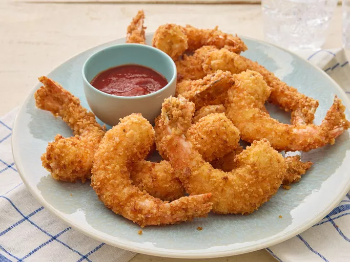

Fried Shrimp

Description:
These fried shrimp have just the right amount of crunch thanks to the panko bread crumbs. If desired, serve with Kikkoman Tonkatsu Sauce for dipping.
Ingredients
- ⅓ cup all-purpose flour
- ¾ teaspoon salt
- ½ teaspoon ground black pepper
- 3 large eggs
- 1 ½ cups Kikkoman Panko Bread Crumbs
- 1 pound uncooked jumbo shrimp, peeled and deveined, tails left intact
- 1 cup vegetable oil for frying, or as needed
Steps
- Mix flour, salt, and pepper in a medium bowl.
- Beat eggs in a second medium bowl until frothy.
- Place bread crumbs in a third bowl.
- Dredge shrimp in the flour mixture, then shake off excess.
- Dip shrimp into beaten eggs.
- Then press shrimp into bread crumbs, turning to coat both sides.
- Heat 2 inches oil in a large, heavy pot to 350 degrees F (175 degrees C).
- Deep-fry shrimp in batches in the hot oil until cooked through, about 1 minute.
- Use tongs to transfer shrimp to a paper towel-lined plate to drain.
- Repeat to cook remaining shrimp.
- Arrange shrimp on a platter to serve.